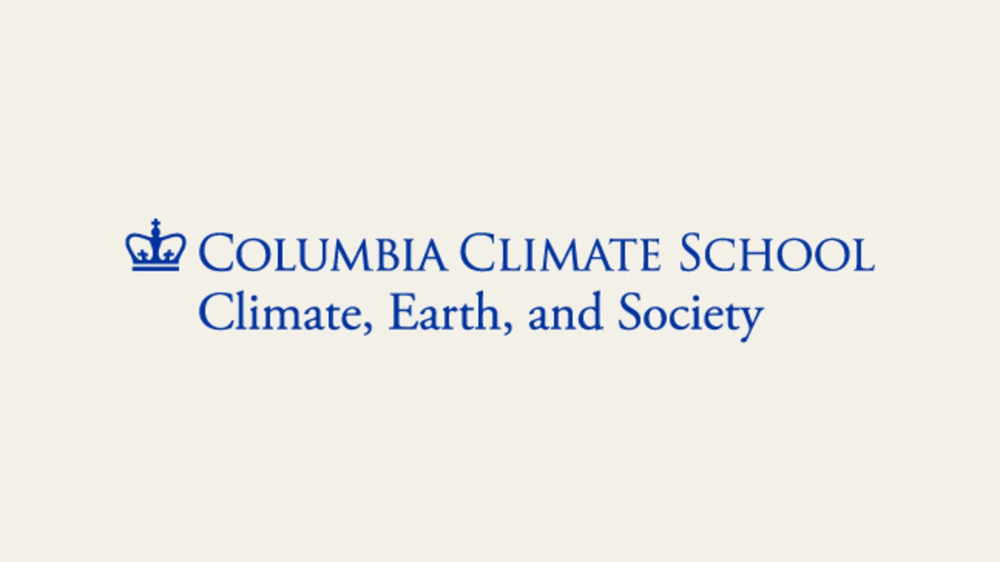

Developing K–12 Disaster Preparedness Curriculum With Columbia
IRISTEM began working with Columbia climate-education leaders to explore student-ready disaster-preparedness resources.

Selecting research for younger learners
IRISTEM joined discussions involving Columbia Climate School’s K–12 and Continuing Education team and the National Center for Disaster Preparedness. The shared question was practical: which disaster and climate research could be responsibly transformed into curriculum for K–12 students?
Choosing a topic is part of the translation work. A useful source must contain a clear scientific or preparedness question, support age-appropriate investigation, and offer enough context for students to understand why the issue matters. The discussions considered those needs before assuming a particular report or project would become a lesson.
Planning audience and format together
The teams discussed intended audience, topic selection, educational formats, and ways student creators could make technical preparedness research more approachable. A resource for elementary learners may begin with observation and local examples, while an older group may be ready to compare hazards, interpret a model, or evaluate a preparedness decision.
IRISTEM brought its student-led development process to the conversation. That work includes identifying unfamiliar language, outlining the background knowledge a learner needs, and designing an activity that makes the research question visible. Possible formats included explainers, guided activities, and curriculum materials that could help students move from learning a concept to using it.
Defining the work carefully
These discussions established a direction for potential curriculum development; they did not represent Columbia’s formal endorsement of a completed publication. Specific source materials, learning goals, and review steps still need to be defined as work advances. Keeping that distinction clear helps educators understand what has been explored and what is ready for use.
The collaboration shows how student creators can contribute before a lesson is written. By asking where younger learners may lose the thread, IRISTEM can help organize technical preparedness research into a path students can follow. Columbia’s climate-education and disaster-preparedness expertise helps frame the source material and the educational setting. Together, those perspectives create a careful starting point for resources that could make disaster preparedness understandable without treating the science or community choices as simple.